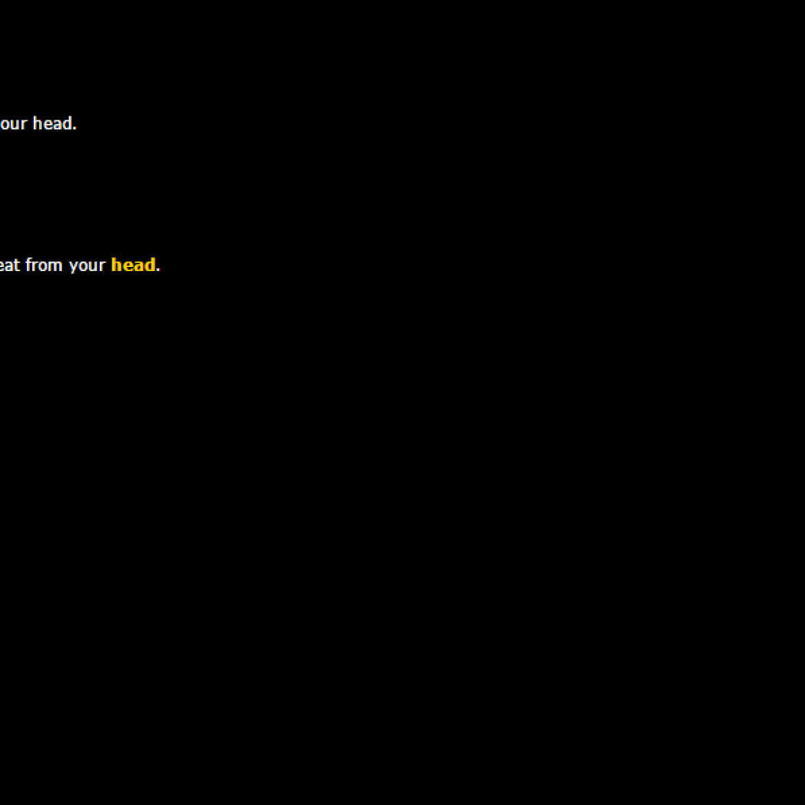

Selected work
100 Games
← All 100 games

Game 62/100
Burn Baby Burn
You wipe the sweat from your head.
Year
2014
Development
1 day
Availability
Playable
Digital
Interactive Fiction
Online
It’s hot.
You wipe the sweat from your head.
Newer in series
You Don’t Know the Half of It: Fins of the Father
Earlier in series
Temporality